retain项目专家示范Project expert
match_and_pick_from_conveyor
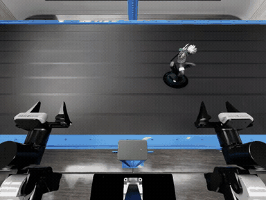
深度：现有 RGB 需估计／重建 · 可新采 RGB-DDepth: Existing RGB needs estimation/reconstruction · new RGB-D possible
当前包无 depth；官方样本有多视角标定，可尝试几何重建。Current packages lack depth; calibrated public views support a reconstruction attempt.
项目 v5 合格脚本示范，头部相机。Accepted project v5 scripted demonstration, head camera.
已有试采Implemented pilot · 有公开数据来源Public release source
官方 100 条；项目 v4 20 / v5 3 条合格Official 100; project accepted v4 20 / v5 3
retain项目专家示范Project expert
push_puck_collision
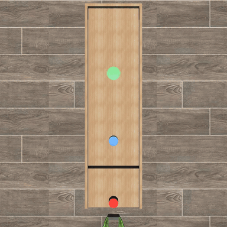
深度：可新采 RGB-D · 当前记录无深度Depth: New RGB-D collection possible · no stored depth
可扩展 MuJoCo 采集；原帧完整状态重渲染尚未验证。Extend MuJoCo collection; original-frame state rendering is unverified.
项目 pilot-v2 专家示范，俯视相机。Project pilot-v2 expert demonstration, bird view.
已有试采Implemented pilot · 仅项目自采Project data only
项目自采 27 条；无匹配标准公开集27 project recordings; no matching standard release
retain项目专家示范Project expert
PhysMani

深度：已有深度 · 原始数据Depth: Stored depth · original data
原始示范／观测包有深度；WM 预测深度不是真值。Original observations have depth; WM predictions are not ground truth.
代表示例：击打旋转目标。16 个原生任务在下方单独展开。项目专家示范，不是模型成绩。Representative: hitting a rotating target. All 16 native tasks are shown separately below. Project expert demonstration, not a model score.
复现进行中Reproduction ongoing · 有公开数据来源Public release source
作者 train/val/test＋WM；16 原生任务Author train/val/test + WM; 16 native tasks
P0-upgrade官方演示Official demo
RollBall-v1
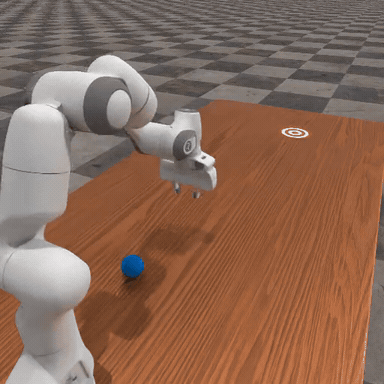
深度：公开轨迹可重渲染 · 项目诊断已有深度Depth: Public states can render depth · project diagnostics have depth
公开原始轨迹存 env_states；项目诊断已存 depth。Public raw trajectories store env_states; project diagnostics store depth.
ManiSkill v3.0.1 官方任务演示。Official ManiSkill v3.0.1 task demonstration.
已有诊断Diagnostic only · 有公开数据来源Public release source
选定 RL 轨迹元数据 855 episodes855 episodes in selected RL metadata
retain官方演示Official demo
PullCubeTool-v1
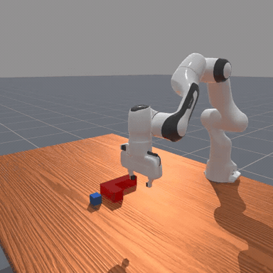
深度：公开轨迹可重渲染 · 项目诊断已有深度Depth: Public states can render depth · project diagnostics have depth
公开原始轨迹存 env_states；项目诊断已存 depth。Public raw trajectories store env_states; project diagnostics store depth.
ManiSkill v3.0.1 官方任务演示。Official ManiSkill v3.0.1 task demonstration.
已有预测实验Forecasting diagnostics · 有公开数据来源Public release source
motionplanning 1,000 episodes1,000 motion-planning episodes
retain官方演示Official demo
PokeCube-v1
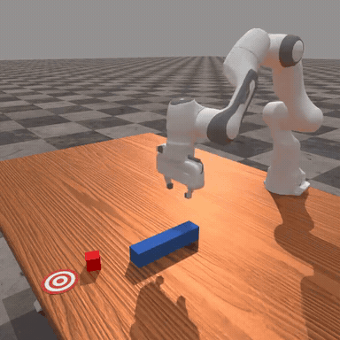
深度：公开轨迹可重渲染 · 项目诊断已有深度Depth: Public states can render depth · project diagnostics have depth
公开原始轨迹存 env_states；项目诊断已存 depth。Public raw trajectories store env_states; project diagnostics store depth.
ManiSkill v3.0.1 官方任务演示。Official ManiSkill v3.0.1 task demonstration.
已有诊断Diagnostic only · 有公开数据来源Public release source
选定 RL 轨迹元数据 579 episodes579 episodes in selected RL metadata
retain官方演示Official demo
PickCube-v1
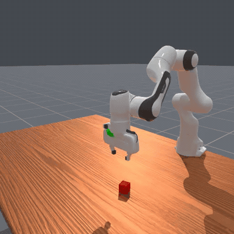
深度：公开轨迹可重渲染 · 项目诊断已有深度Depth: Public states can render depth · project diagnostics have depth
公开原始轨迹存 env_states；项目诊断已存 depth。Public raw trajectories store env_states; project diagnostics store depth.
ManiSkill v3.0.1 官方任务演示。Official ManiSkill v3.0.1 task demonstration.
已有诊断Diagnostic only · 有公开数据来源Public release source
motionplanning 1,000 episodes1,000 motion-planning episodes
retain官方演示Official demo
PushT-v1
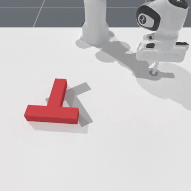
深度：公开轨迹可重渲染 · 项目诊断已有深度Depth: Public states can render depth · project diagnostics have depth
公开原始轨迹存 env_states；项目诊断已存 depth。Public raw trajectories store env_states; project diagnostics store depth.
ManiSkill v3.0.1 官方任务演示。Official ManiSkill v3.0.1 task demonstration.
已有诊断Diagnostic only · 有公开数据来源Public release source
选定 RL 轨迹元数据 719 episodes719 episodes in selected RL metadata
retain项目诊断Project diagnostic
PandaFingerArticulationDiagnostic-v0
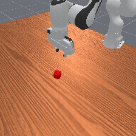
深度：已有深度 · 项目诊断Depth: Stored depth · project diagnostics
现有 HDF5 有 depth 和相机内外参。Existing HDF5 files have depth and camera calibration.
项目手指关节诊断片段，原始 RGB。Project finger-articulation diagnostic, original RGB.
已有诊断Diagnostic only · 仅项目自采Project data only
自定义任务；项目 2 source episodesCustom task; 2 project source episodes
P2旧版参考 · v0Legacy reference · v0
TurnFaucet-v1
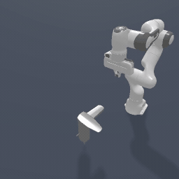
深度：v1 深度待确认Depth: v1 depth availability unconfirmed
匹配 v1 数据／资产尚未验收；v0 GIF 只是动作参考。Matching v1 data/assets are unaccepted; the v0 GIF is a motion reference.
旧版 TurnFaucet-v0 官方动作参考；不是 v1 轨迹或验收结果。Legacy official TurnFaucet-v0 motion reference; not a v1 trajectory or acceptance result.
资产阻塞Asset blocked · 匹配版本数据未确认Matching data unconfirmed
当前官方示范注册表未找到 v1v1 absent from checked official demo registry
P0官方演示Official demo
ToolHang
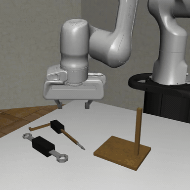
深度：可重渲染深度Depth: Depth can be rendered from saved states
raw 状态转观测支持 --depth；v1.5 兼容性待验收。Raw-state conversion supports --depth; validate v1.5 compatibility.
robomimic 作者任务演示；不表示本项目已有策略成绩。Task demonstration from robomimic authors; not a project policy result.
建议接入Proposed · 有公开数据来源Public release source
robomimic PH 200 条人类成功示范robomimic PH: 200 successful human demos
P0外部策略示例External policy example
sweep_to_dustpan_of_size
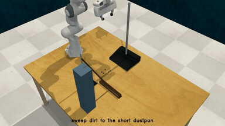
深度：已有深度 · 原始数据Depth: Stored depth · original data
RLBench 发布格式有深度 PNG；所选归档尚未解包验收。The RLBench release format has depth PNGs; selected archives remain unverified.
PerAct 作者 RLBench 策略示例；将碎屑扫入指定簸箕。PerAct author RLBench policy example: sweeping dirt into the specified dustpan.
建议接入Proposed · 有公开数据来源Public release source
PerAct：每任务 train/val/test 100/25/25PerAct: 100/25/25 train/val/test per task
P0官方演示Official demo
OpenDrawer
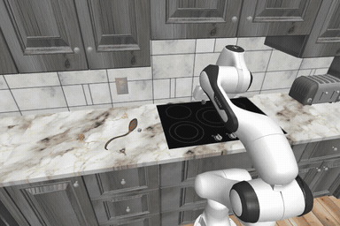
深度：可重渲染深度Depth: Depth can be rendered from saved states
保留 XML、states 和 episode extras；转换及帧对齐待验收。Preserve XML, states and episode extras; conversion/alignment need validation.
RoboCasa 官方任务演示，取左侧外部相机。Official RoboCasa task demonstration; left external camera.
建议接入Proposed · 有公开数据来源Public release source
human pretrain 100 / target 500；MG 10kHuman pretrain 100 / target 500; MG 10k
P0官方演示Official demo
PanTransfer
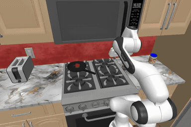
深度：可重渲染深度Depth: Depth can be rendered from saved states
保留 XML、states 和 episode extras；转换及帧对齐待验收。Preserve XML, states and episode extras; conversion/alignment need validation.
RoboCasa 官方任务演示，取左侧外部相机。Official RoboCasa task demonstration; left external camera.
建议接入Proposed · 有公开数据来源Public release source
human target 500；无注册 pretrain／MGHuman target 500; no registered pretrain/MG
P1外部策略示例External policy example
reach_and_drag
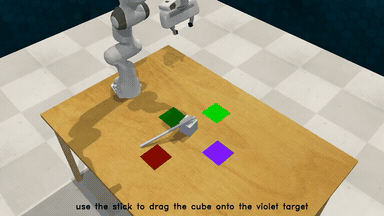
深度：已有深度 · 原始数据Depth: Stored depth · original data
RLBench 发布格式有深度 PNG；所选归档尚未解包验收。The RLBench release format has depth PNGs; selected archives remain unverified.
PerAct 作者 RLBench 策略示例；使用工具拉动方块。PerAct author RLBench policy example: dragging a cube with a tool.
建议接入Proposed · 有公开数据来源Public release source
PerAct：每任务 train/val/test 100/25/25PerAct: 100/25/25 train/val/test per task
P1官方演示Official demo
CloseFridge
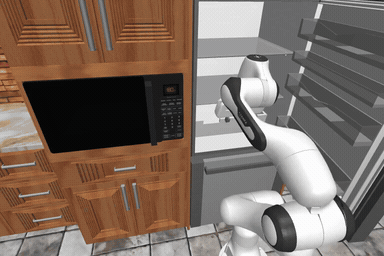
深度：可重渲染深度Depth: Depth can be rendered from saved states
保留 XML、states 和 episode extras；转换及帧对齐待验收。Preserve XML, states and episode extras; conversion/alignment need validation.
RoboCasa 官方任务演示，取左侧外部相机。 预览播放 1.13×。Official RoboCasa task demonstration; left external camera. Preview playback 1.13×.
建议接入Proposed · 有公开数据来源Public release source
human pretrain 100 / target 500；MG 10kHuman pretrain 100 / target 500; MG 10k
P2官方演示Official demo
SlideDishwasherRack
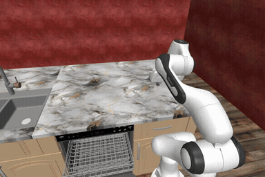
深度：可重渲染深度Depth: Depth can be rendered from saved states
保留 XML、states 和 episode extras；转换及帧对齐待验收。Preserve XML, states and episode extras; conversion/alignment need validation.
RoboCasa 官方任务演示，取左侧外部相机。Official RoboCasa task demonstration; left external camera.
建议接入Proposed · 有公开数据来源Public release source
human pretrain 100 / target 500；MG 10kHuman pretrain 100 / target 500; MG 10k
P2官方演示Official demo
StackBowlsCabinet
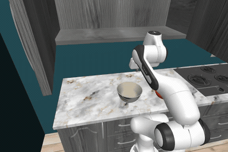
深度：可重渲染深度Depth: Depth can be rendered from saved states
保留 XML、states 和 episode extras；转换及帧对齐待验收。Preserve XML, states and episode extras; conversion/alignment need validation.
RoboCasa 官方任务演示，取左侧外部相机。Official RoboCasa task demonstration; left external camera.
建议接入Proposed · 有公开数据来源Public release source
human pretrain 100 / target 500；无 MGHuman pretrain 100 / target 500; no MG
P2官方演示Official demo
CoffeeSetupMug
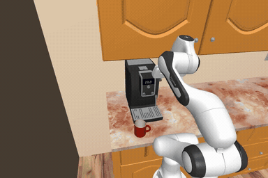
深度：可重渲染深度Depth: Depth can be rendered from saved states
保留 XML、states 和 episode extras；转换及帧对齐待验收。Preserve XML, states and episode extras; conversion/alignment need validation.
RoboCasa 官方任务演示，取左侧外部相机。Official RoboCasa task demonstration; left external camera.
建议接入Proposed · 有公开数据来源Public release source
human pretrain 100 / target 500；MG 10kHuman pretrain 100 / target 500; MG 10k
P2官方演示Official demo
SlideToasterOvenRack
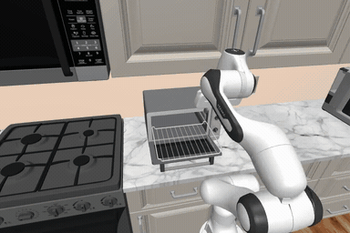
深度：可重渲染深度Depth: Depth can be rendered from saved states
保留 XML、states 和 episode extras；转换及帧对齐待验收。Preserve XML, states and episode extras; conversion/alignment need validation.
RoboCasa 官方任务演示，取左侧外部相机。Official RoboCasa task demonstration; left external camera.
建议接入Proposed · 有公开数据来源Public release source
human pretrain 100＋MG 10k；无 targetHuman pretrain 100 + MG 10k; no target
P2官方演示Official demo
StirVegetables
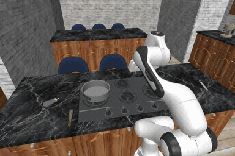
深度：可重渲染深度Depth: Depth can be rendered from saved states
保留 XML、states 和 episode extras；转换及帧对齐待验收。Preserve XML, states and episode extras; conversion/alignment need validation.
RoboCasa 官方任务演示，取左侧外部相机。 预览播放 1.70×。Official RoboCasa task demonstration; left external camera. Preview playback 1.70×.
原判定待审Source audit needed · 有公开数据来源Public release source
human pretrain 100 / target 500；无 MGHuman pretrain 100 / target 500; no MG
auxiliary官方演示Official demo
MOVi-C
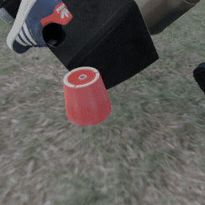
深度：已有深度 · 原始数据Depth: Stored depth · original data
TFDS 有 depth；定义为相机中心射线距离。TFDS contains depth, defined as ray distance from camera center.
Kubric 官方 MOVi-C 示例，含物体运动与碰撞。Official Kubric MOVi-C example with moving objects and collisions.
建议接入Proposed · 有公开数据来源Public release source
TFDS 128² v1.0.0：9,737/250/999TFDS 128² v1.0.0: 9,737/250/999
auxiliary官方演示Official demo
Physion-v1.5-OCP
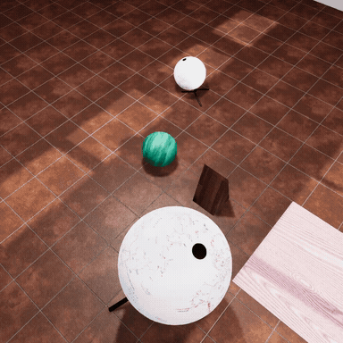
深度：已有深度 · 原始数据Depth: Stored depth · original data
v1.5 Collide 原始 HDF5 已实查；MP4 预览无深度。Raw v1.5 Collide HDF5 was inspected; MP4 previews have no depth.
Physion v1.5 官方 Collide 场景示例；不是 OCP 评测输出。Official Physion v1.5 Collide example; not an OCP evaluation output.
建议接入Proposed · 有公开数据来源Public release source
7 类 readout train＋test，14 个 zip7 categories; readout train/test, 14 ZIPs
P2官方数据预览Official data preview
CLEVRER
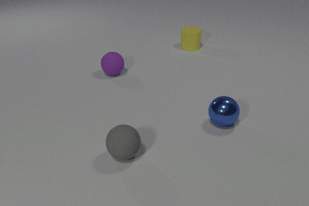
深度：现有视频需估计深度Depth: Existing videos require estimated depth
标准发布无像素深度；对象三维中心标注不等于表面深度。The standard release lacks pixel depth; object centers are not surface depth.
CLEVRER 官方 train 视频 video_00000；只提取这一条预览。Official CLEVRER train video_00000; only this preview was extracted.
建议接入Proposed · 有公开数据来源Public release source
20,000 视频：10k/5k/5k20,000 videos: 10k/5k/5k
P2官方演示Official demo
CoPhy
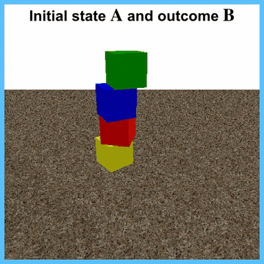
深度：部分可重建／新采 · 待验证Depth: Partial reconstruction/new collection · unverified
Blocktower 有生成器；BallsCF／CollisionCF 路径待核。Blocktower has a generator; BallsCF/CollisionCF paths need verification.
CoPhy 作者示例；用于观察成对物理变化。CoPhy author example illustrating paired physical changes.
建议接入Proposed · 有公开数据来源Public release source
作者 224² 集约 18 GB＋split 文件Author 224² corpus about 18 GB + split file
P2官方演示Official demo
AdroitHandHammer-v1
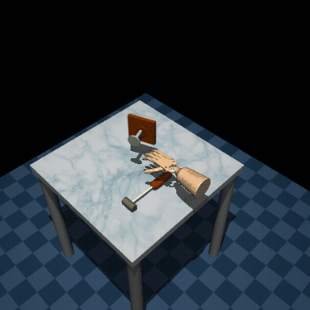
深度：可生成 RGB-D · 完整状态待核Depth: RGB-D generation possible · verify full state
原始 D4RL 有状态恢复路径；所选 Minari state 字段未实查。Original D4RL supports state recovery; selected Minari state fields are unchecked.
Farama 官方 Adroit Hammer 动图。Official Farama Adroit Hammer animation.
建议接入Proposed · 有公开数据来源Public release source
Minari human-v2：25 episodes / 11,310 stepsMinari human-v2: 25 episodes / 11,310 steps